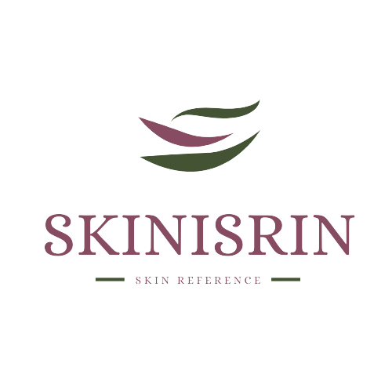

SKINISRIN is one of the websites that provides articles and, of course, beauty product recommendations to offer a complete solution for keeping your skin healthy, beautiful, and radiant. Here, you can find beauty products ranging from local to international brands.
SKINISRIN was established in 2022 and has helped many people with recommendations for skincare products that suit their skin types. SKINISRIN will continue to grow and assist many people in solving their skin problems. Because healthy skin is priceless